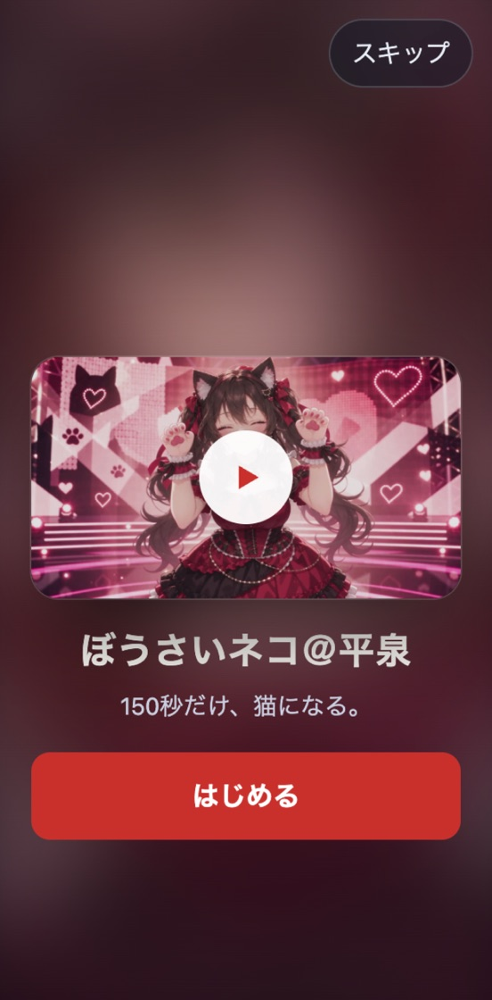
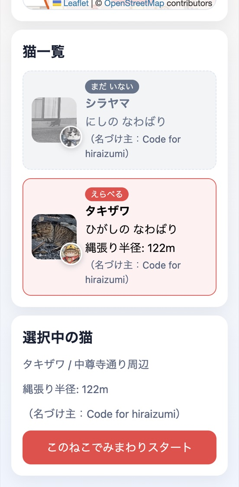
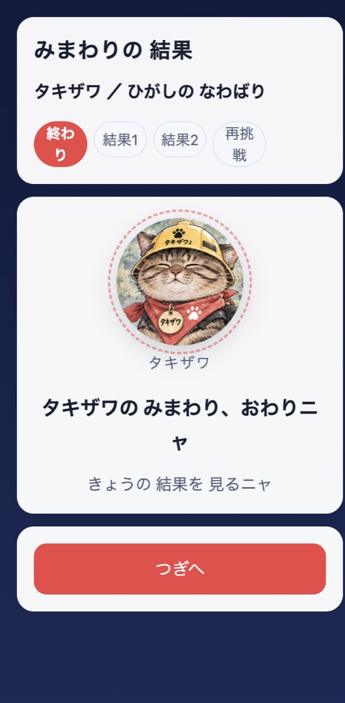
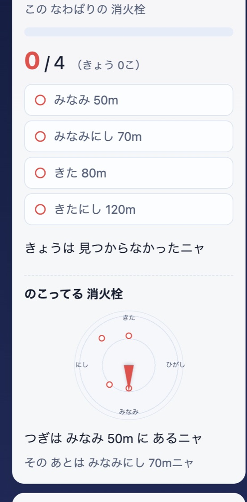
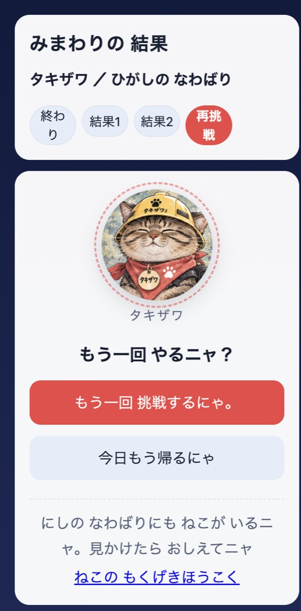
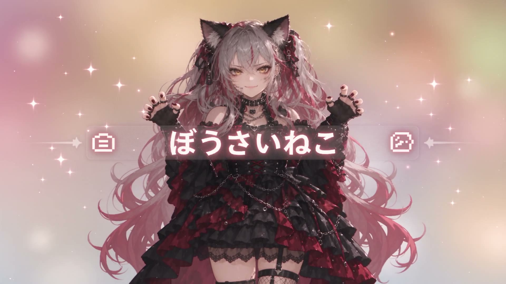
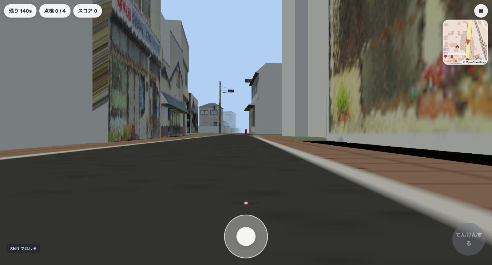
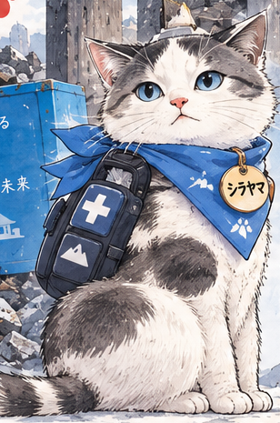
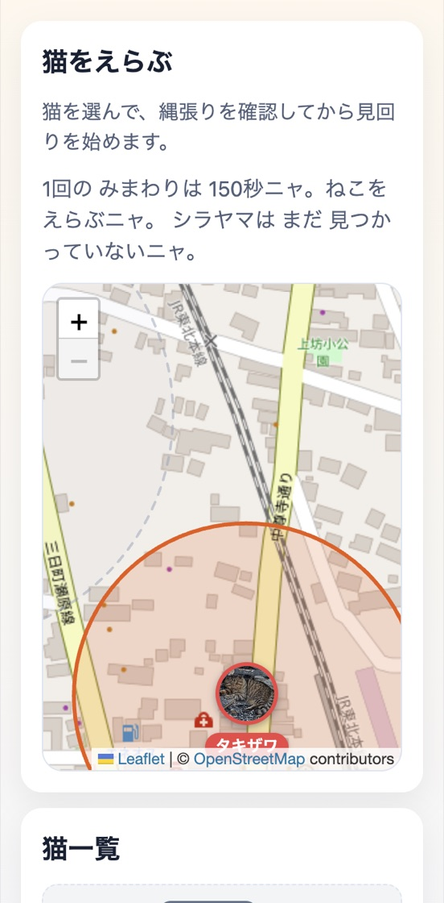

はじまるOPの映像と曲から入る
動画は画面の中央。下の「はじめる」か枠の再生で曲が流れ、「スキップ」で猫えらびへ進みます。
この道は岩手県平泉町の実際の地図から起こしています。建物の壁も、実際の町並みを写したものです。
あなたはいま、人の目の高さで立っています。この先に消火栓がありますが、たぶん見えていません。
このゲームでは、名前を持つ人格が150秒だけ猫の体を借ります。借りるのは体だけで、地図も記憶も人格の側が持っています。
体が変われば、見えるものが変わる。それが、このゲームがやっていることのほとんどです。
赤いやつが 見つかったニャタイヤの裏。看板の足元。草の下。人が立ったまま見つけられない場所に、消火栓は立っています。
いま目の前にあるのは 泉屋75番地の消火栓。平泉町が公開している消火栓データの1件で、タキザワの縄張りで最初に向かうことになる場所です。
スマートフォンのブラウザで動きます。インストールも、ログインもありません。OPの映像と曲から入り、見回り、結果、帰る選択までが一続きです。

はじまる動画は画面の中央。下の「はじめる」か枠の再生で曲が流れ、「スキップ」で猫えらびへ進みます。

えらぶタキザワは中尊寺通り周辺に縄張りを持っています。シラヤマはまだ体が見つかっていないので選べません。

おわり時間が来ると見回りは終わります。何個見つけたかにかかわらず、その日の記録が残ります。

よむ見つけた数と、まだの消火栓が「みなみ 50m」のように出ます。次にどちらへ歩くかの手がかりです。

もういちど前回のタイムと比べられます。道を覚えるほど速くなり、覚えるのはプレイヤーの側です。

かえる帰るとエンディングの映像と曲が流れます。スキップすると、また猫えらびへ戻ります。
見回りが始まると曲が切り替わります。右上のミニ地図に、赤い点と縄張りの円。近づくと「てんけんする」が点きます。壁にぶつかると「あいたっ」と言います。

突き当たりの赤が、泉屋75番地の消火栓。点検すると赤から緑に変わり、同じ消火栓は二度数えません。
タキザワとシラヤマは猫の名前ではなく、猫に入る人格の名前です。ボタンを押すと表情が変わります。


ひがしの なわばり ／ 中尊寺通り周辺 ／ 半径122m ／ 消火栓4か所
みつけた赤は みんなのあんしんに つながるニャ
東の猫に入る人格。中尊寺通りのあたりを縄張りにする体を、すでに持っています。いま遊べるのはこちらです。


にしの なわばり ／ 志羅山・鈴沢地区 ／ 半径160m
そなえれば きっと まもれるニャ
西の猫に入るはずの人格。まだ入る体が見つかっていません。起こす方法は、下に書いてあります。
ゲームに出てくる消火栓は作り物ではなく、平泉町が公開している位置データです。泉屋、志羅山、鈴沢、花立。番地で名前がついています。
いま遊べるのは、そのうちタキザワの縄張りに入る4か所だけ。橙の円が東、藍の円が西の縄張りです。町にはまだ、だれも見回っていない赤がたくさん残っています。
人格は町にいくらでも作れます。足りないのは体のほうです。
現実の平泉町のどこかで、だれかが野良猫を見つけて教えてくれたとき、シラヤマは目を覚まします。ゲームと現実の町が、ここでつながります。

実線の円がタキザワの縄張り。点線の円は、まだねこがいない西のなわばりです。